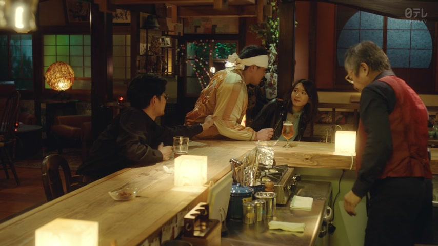

ちょっと

He Who Can't Marry · Episode 1
うーんこれはちょっと細いから厳密にはスパゲティーニ
"Hmm, this one's a bit thin, so strictly speaking it's spaghettini."
ちょっと means a little, a bit. It goes right before the part it makes smaller: ちょっと + 細い = "a bit thin".
On this card, he looks at the pasta and says it's a bit too thin to be spaghetti, so strictly it's spaghettini. Without ちょっと it would just be "it's thin".
Japanese also use ちょっと to soften things: ちょっと待って (wait a sec), or 今日はちょっと… to say no gently. ちょっと never changes; polite or casual only shows at the end.
Examples
You try on a jacket in a shop. Your friend asks how it fits.
ちょっと大きい。
"It's a bit big."
CasualAt a restaurant, the waiter asks how the curry is.
ちょっと辛いです。
"It's a little spicy."
PoliteYour friend is about to leave, but you still need your shoes on.
ちょっと待って！
"Wait a sec!"
Here ちょっと isn't really "a little". It just makes 待って softer.
CasualA coworker asks if you want to go drinking tonight. You don't.
今日はちょっと…。
"Today's a bit…"
The rest is left unsaid. Everyone understands it as a soft no.
PoliteWith and without
この靴は大きい。
"These shoes are big."
この靴はちょっと大きい。
"These shoes are a bit big."
待って！
"Wait!" Short and sharp.
ちょっと待って！
"Wait a sec!" Same request, softer.
Sentence mining

Shirokuma Cafe · Season 1, Episode 3
ちょっとお手本見せてよ
"Come on, show me how it's done."
The softening ちょっと: it makes the request sound lighter.

YouTube · video
あの〜、自転車を漕ぎながら地図を見るのはちょっと危ないですね。
"Um, looking at a map while riding a bike is a bit dangerous."
ちょっと + 危ない: a bit dangerous. It also keeps the warning gentle.

YouTube · video
ファミリーマートの卵サンドはパッケージがなんかちょっと小さいですね。
"The FamilyMart egg sandwich package is kind of a bit small."
ちょっと + 小さい: a bit small. なんか is just "kind of".

YouTube · video
明日もうちょっと長野県の北の方に行きます。
"Tomorrow I'm going a bit further north in Nagano."
もうちょっと is "a bit more": a bit further north.

Shirokuma Cafe · Season 1, Episode 6
クマ野郎ちょっと焼いてこいよ
"Hey, you bear, go get yourself a bit of a tan."
ちょっと + 焼いてこい: go tan a bit. Rough, teasing talk between friends.

YouTube · video
ここは多分ちょっと動画を撮ってはいけませんね。
"We probably can't really film here."
The softening ちょっと again: it makes "not allowed" sound less blunt.
I'm Taking the Day Off · Episode 5
ちょっと待って！
"Wait a sec!"
ちょっと softens it: "wait a little", not a hard order.

Weakest Beast · Episode 2
ちょっと 近い！
"You're a bit too close!"
ちょっと + 近い: "a bit close", a soft way to complain.